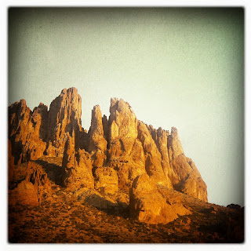

Recovered weblog entry
Lost Dutchman State Park

I've wanted to come out here for a while now. Though still battling a cold, I felt encouraged to take the trip today after work.
Got there with plenty of sunlight left. Even took the new bike for a spin around a few trails.
Also, an iPhoto Journal. More shots can be found there. Enjoy!
Lens: Libatique 73
Film: Ina's 1935